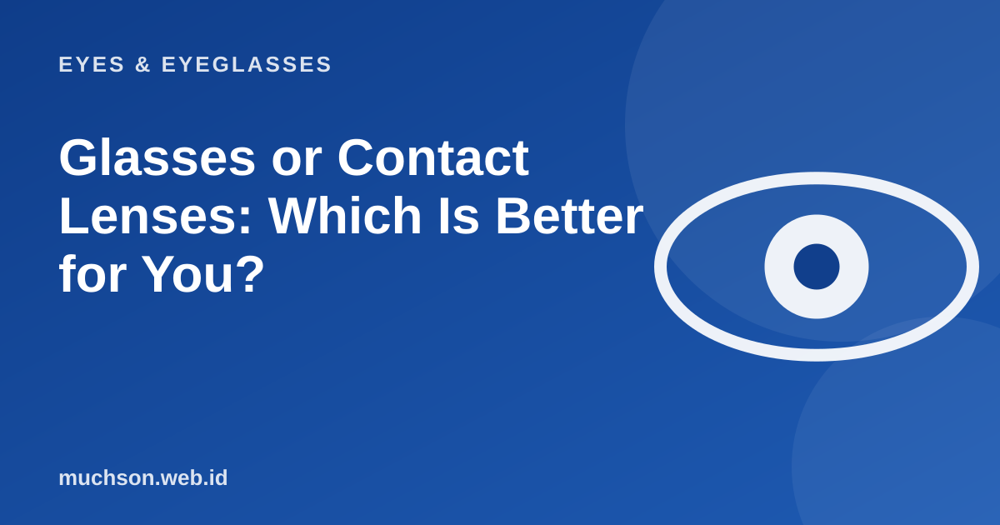

Home › Articles › Eyes & Eyeglasses
Eyes & EyeglassesGlasses or Contact Lenses: Which Is Better for You?
Neither choice wins for everyone. Glasses are simple and low risk; contact lenses give visual freedom but demand good hygiene. Choose by your habits, not by trend.

A direct comparison
Text description of the diagram
Glasses
- Easy to put on and take off
- Very low risk of eye infection
- One purchase can last a long time
- Can fog up or get rained on
- Field of view limited by the frame
Contact lenses
- A more natural field of view
- Comfortable for sport
- Needs strict hygiene
- Eyes can get dry and irritated
- Ongoing cost
Safe rules for contact lenses
Do not ignore it
Red, painful or light-sensitive eyes while wearing contact lenses are warning signs. Take the lenses out and see an eye doctor right away. A corneal infection can be serious.
FAQ
Can contact lenses be worn all day?
Many people wear them for several hours up to a whole day, but your eyes need rest. Follow the advice for your lens type and your doctor.
Can astigmatism be corrected with contact lenses?
Yes, with a special type (toric), especially for certain cylinder values. An exam is needed to decide the type.
Which is cheaper?
Over the long run glasses are usually cheaper, because contact lenses create repeat costs, including solution.